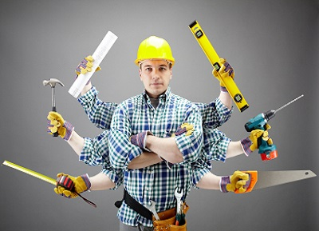
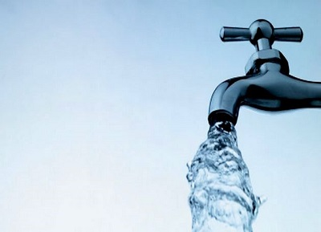
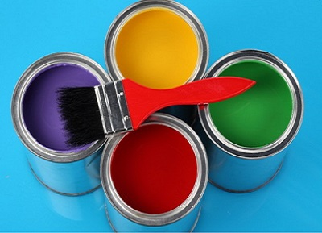
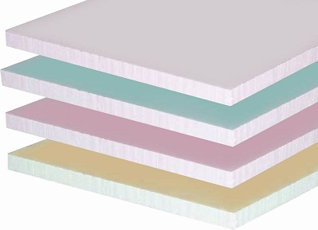
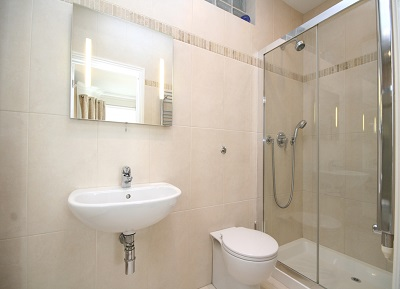
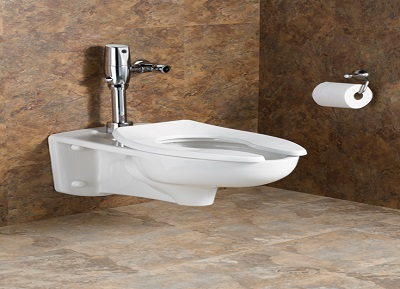
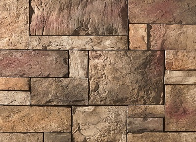
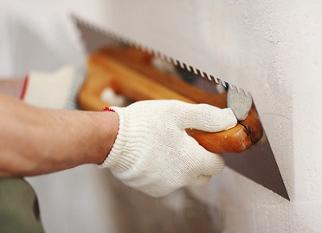
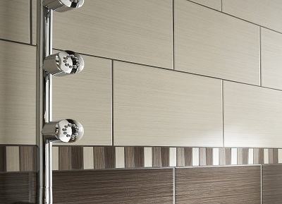

Ремонтни дейности
Животът е твърде кратък за да губим времето си с неща, които някой би свършил по-бързо и поне със същото качество като нас.
Наслаждавайте се на свободното си време,оствете ремонтите на нас. От всякакъв строителен тип,по всяко време,на всяка разумна цена.
Стартирахме като услуга за приятели.Строително-ремонтни услуги от всякакъв вид.
Услугата си остана услуга, приятелите си останаха приятели. И като истински приятели,
навсякъде се чувстваме като у дома си - каквото изцапаме си го взимаме професионално със нас,
за да ни поканят отново, а и просто защото знаем какво е уважение, колко лесно се губи, и
колко трудно се постига. И за да не влизаме в рутина, а винаги да черпим вдъхновение, превърнахме
работата в наше хоби. Така удоволствието от свършената работа остава завинаги.

ВиК
Всеки от нас обича да намира пантофите си сутрин там където ги е оставил. Ор друга страна статистиката показва,че тръбите се пукат най-често
когато сте високо в планината или на десетдневна почивка в чужбина. Пазете пантофите си,почивайте спокойно,оставете на нас да се оправим с водата.
Всякакъв вид ВиК услуги.Изграждане,поддръжка и ремонт.

Боядисване
До момента без неизпълнени желания.Всеки нюанс се постига с опит,вдъхновение и поне малко талант.
С годините придобихме начин на мислене или по-точно изградихме професионална ценностна система в която например думата каприз не съществува.
Клиентът винаги знае какво иска, но наша е задачата той да намери бързо и лесно пътя към удовлетворението.

Гипсокартон
Добър приятел или заклет враг. В това отношение гипсократона може да бъде изключително краен.
Има нужда от специално отношение и ако не го получи следва жестоко отмъщение. Като стари познайници с него
взаимоотношенията ни стигнаха до ниво, на което всеки си знае мястото,а ако не го знае другия бързо му го намира.
С времето постигнахме почти пълно елеиминиране на елемента на изненнада в нашата комуникация.
Лепене и ремонт в нови,текущи и последващи строителни дейности

Бани
Банята е място където човек обича да пее,да тренира речи пред огледалото,да стои на плстамсово столче безцелно с вестник
(смартфон)и не на
последно място понякога(в чести случаи веднъж дневно) да се къпе.С времето успяхме да се научим да правим баните така че гласът Ви да звучи
като този на Роби Уилямс или Селин Дион, да възплянвате тълпите като Фидел Кастро или да си почивате качествено като истински човек.
Не рискувайте да изгубите чара на този приказен свят като потърсите някой който не знае какво прави.
Изграждане,всякакви видове ремонт-основни,освежаващи,частични,аварийни

Тоалетни
Концентрацията и доброто изпълнение при посещението на това специфично място са от жизненоважно значение за всяко живо съдание.
За да се получат нещата единственото което трябва да се случи е да не се усеща под каквато и да е форма присъствието на
"Баш майстора", в протиен случай последиците са от най-различно естество без положителен характер. По отношението на "майсторлъка"
имаме едно единствено правило-здраво стъпили сме на земята и знаем че човек се учи докато е жив.

Каменни Облицовки
"Казана дума-хвърлен камък" звучи много по-правдиво като "Положен камък-дадена дума" или ако продължим с по-дълга реклама
твърде много камъни ще отидат там където не им е мястото.Едно нещо не успяхме да избегнем с времето-да се заиграваме,а при каменната облицовка
това, ако не друго, помага.

Мазилка
Вместо да "мажем" сме избрали един по-труден,но по коректен модел на работа, а именно "поставяме мазилка".
Не е толкова популярен,нито води до лесни(пирови) победи, но дава възможност за ефективна, видима отдалеч безценна реклама,
а ние инвестираме в това-вашето и нашето бъдеще.
Всякакви видове поставяне на мазилка-основни,освежаващи,частични,аварийни

Фаянс
Плочките,залепени от нас, са достатъчна причина никога повече да не се налага специалист-фаянс да влезне в банята Ви.
И то не защото са толкова криви че запушват входа, а защото си "тежат" на мястото и нямат нужда от допълнителна помощ за да изглеждат добре.
Изграждане съгласно добрите практики. Ремонт и реновиране